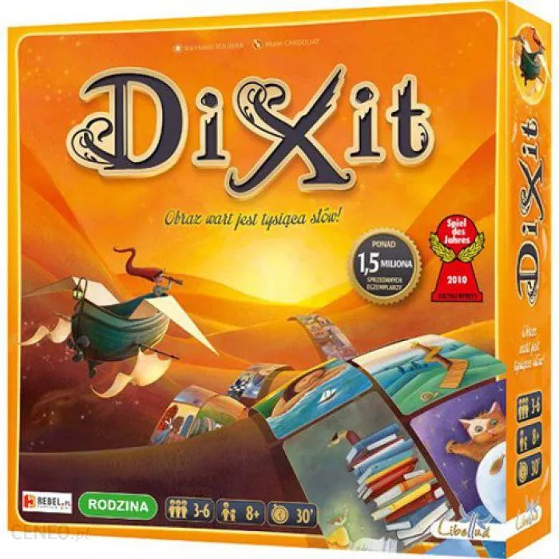
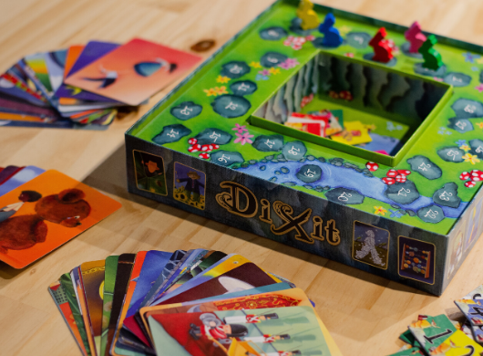
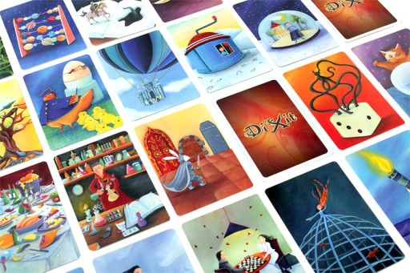
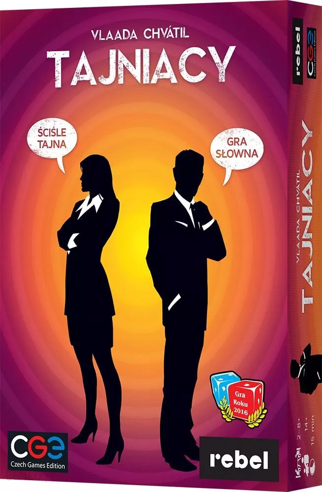
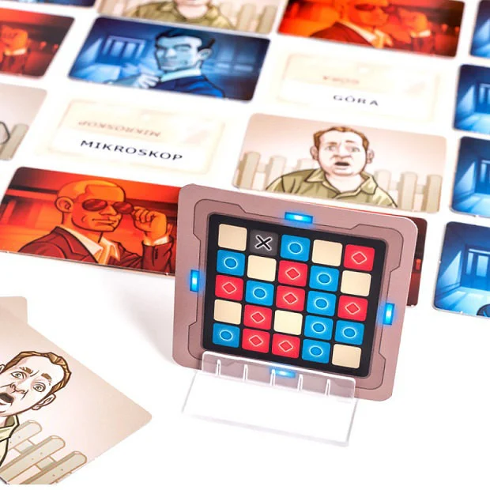
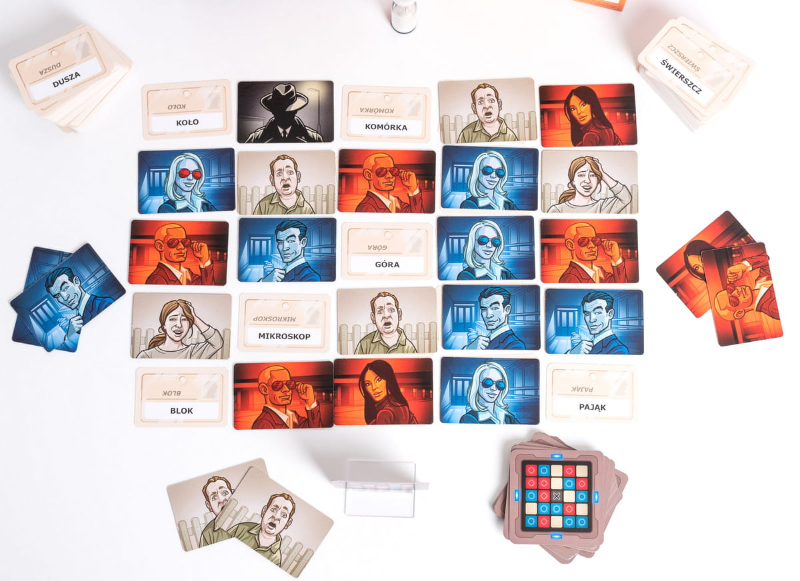
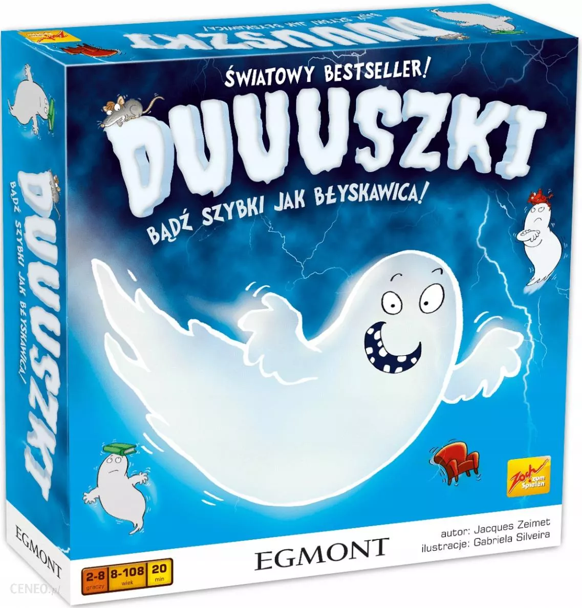

DIXIT
  Liczba graczy: 3-6 osób
Wiek: 8+
Czas gry: 30 minut
Wydawca: Rebel
Wstrzymaj na chwilę oddech! Karty zostały odkryte. Ich wspólną cechą jest tajemnicze zdanie, lecz tylko jedna z kart jest do niego kluczem. Użyj swojego sprytu i intuicji, by nie dać się złapać w pułapkę zastawioną przez pozostałych graczy.. Dixit to narracyjna gra karciana, w której wymyślamy i odgadujemy skojarzenia do wieloznacznych, bogato ilustrowanych kart. W każdej rundzie jedna z osób zostaje Bajarzem - wybiera dowolną kartę z ręki i podaje hasło, które jej zdaniem odzwierciedla obrazek. Może to być pojedyncze słowo, całe zdanie, cytat lub fragment piosenki czy filmu. Kolejne osoby wybierają spośród swoich kart po jednej pasującej do słów Bajarza, a następnie wszystkie obrazki są tasowane. Zadaniem graczy jest odgadnięcie, który obrazek był tym pierwszym. Należy znaleźć jedną kartę, która jest kluczem prowadzącym do rozwiązania zagadki. Trzeba przy tym uważać na pułapki zastawione przez przeciwników. Koniec gry następuje w chwili dobrania ostatniej karty z talii. Zwycięża osoba, której uda się zdobyć największą liczbę punktów.
TAJNIACY
  Liczba graczy: 2-8 osób
Wiek: 14+
Czas gry: 30 minut
Wydawca: Rebel
Dwie drużyny, którym przewodzi dwóch Szefów Wywiadu, próbują jak najszybciej nawiązać kontakt ze wszystkimi swoimi agentami. Problem leży w tym, że Szef Wywiadu może podawać swojej drużynie tylko jedno hasło na turę, którym powiąże ze sobą kilka widocznych dla wszystkich kryptonimów. Drużyna musi domyślić się, który z prezentowanych kryptonimów należy do agentów ich drużyny, omijając cudzych agentów. Ale uwaga! Jeden z kryptonimów należy do zabójcy... Hasła są wieloznaczne, skojarzenia również – owocuje to rozgrywką pełną śmiechu i emocji. Szefowie Wywiadów mogą co prawda komunikować się ze swoja drużyną, używając tylko jednego skojarzenia na turę, ale drużyna może dyskutować do woli, wspólnie decydując, które hasła pokaże swojemu Szefowi. Szef Wywiadu nie może się niczym zdradzić i przez cały czas musi zachować kamienną twarz, co nie jest takie łatwe! Zwłaszcza gdy po pierwszych prawidłowych domysłach, drużyna zaczyna zbaczać na niebezpieczne wody...
DUUUSZKI


Liczba graczy: 2-8 osób
Wiek: 8+
Czas gry: 20 minut
Wydawca: EGMONT
Doskonała gra imprezowa, w której liczy się refleks i spostrzegawczość.
Na czym polega gra?
Na stole znajduje się 5 różnych przedmiotów w 5 różnych kolorach. Jeden z graczy wykłada kartę. Jeśli kolor któregoś z przedmiotów na karcie odpowiada kolorowi drewnianego przedmiotu - gracze łapią ten przedmiot. Jeśli kolory przedmiotów na karcie nie odpowiadają kolorom drewnianych przedmiotów,gracze łapią przedmiot, którego nie ma na karcie oraz którego kolor nie występuje na karcie. Gracz, który pierwszy złapie właściwy przedmiot zdobywa kartę i kładzie ją przed sobą. Jeśli jednak pomyli się - weźmie nie ten przedmiot, który powinien, wtedy musi oddać jedną ze zdobytych kart. W instrukcji opisana jest również utrudniona rozgrywka dla bardziej wprawnych graczy.